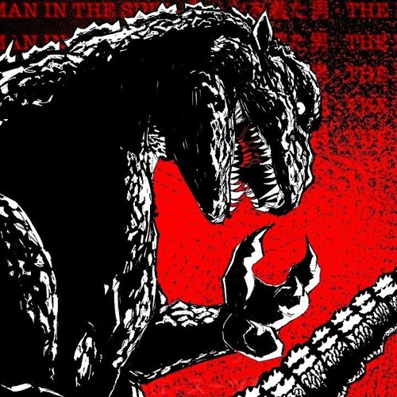

The "Man in the Suit" is a character central to the *Analog Horror* genre, particularly within the context of YouTube-based web series and independent horror media. Analog horror, known for its retro aesthetic, often utilizes VHS tapes, old TV broadcasts, and distorted footage to create a sense of unease and fear. The "Man in the Suit" trope appears in several of these series, and though interpretations vary, there are some common elements and themes.
###
Key Features of the "Man in the Suit" Character:
1. **
Mysterious and Ominous Presence
**: The "Man in the Suit" typically appears as an unsettling figure who seems to be a symbol of authority or control, but in a surreal, threatening manner. He may be depicted wearing a well-tailored suit, often with exaggerated features such as a distorted face, unusual behavior, or an uncanny, emotionless expression.
2. **
Unseen or Infrequent
**: In many analog horror series, the "Man in the Suit" doesn't always appear directly but is often implied through strange occurrences or footage. When he does appear, it’s often sudden and with little explanation, amplifying the horror by keeping the audience in the dark about his true nature and intentions.
3. **
Tied to Conspiracy or Supernatural Forces
**: The "Man in the Suit" is frequently associated with dark, hidden organizations, government conspiracies, or supernatural events. He may be part of a greater, shadowy force that manipulates reality or orchestrates disturbing events. The figure's role can range from a corporate agent to a supernatural being enforcing an unknown agenda.
4. **
Dehumanized and Mechanical
**: Often, the "Man in the Suit" is depicted as somewhat inhuman or mechanical, with his movements or behavior appearing stiff, robotic, or unnervingly precise. This dehumanization contributes to the horror, as the viewer is unsure whether the man is human at all.
5. **
Distorted Reality
**: Since *Analog Horror* often involves broken or corrupted media, the "Man in the Suit" is sometimes seen in corrupted footage, glitching images, or strange television broadcasts. The degraded and unsettling quality of the media adds to the horror, as it distorts the viewer's perception of reality.
###
Notable Examples in Analog Horror:
1. **"
Local 58
"**: This web series by Kris Straub is one of the most well-known examples of analog horror. In "Local 58," a public access TV station becomes a backdrop for a series of strange, horrifying events tied to cryptic broadcasts. The "Man in the Suit" is sometimes implied to be part of a larger, mysterious force manipulating the situation.
2. **"
The Walten Files
"**: Created by Tony and narrated by a mysterious entity, *The Walten Files* is another prominent series that uses the "Man in the Suit" trope. The figure often represents something sinister lurking beneath the surface of an otherwise seemingly innocent environment (in this case, an animatronic restaurant).
3. **"
Gemini Home Entertainment
"**: This is another series where the "Man in the Suit" appears as part of the unsettling narrative. The character serves to emphasize the eerie, otherworldly quality of the analog horror genre, often appearing in short glimpses or unsettling sequences.
###
Themes in "Man in the Suit" Analog Horror:
- **Control and Power**: The "Man in the Suit" represents an authoritarian figure, often connected to institutions or supernatural forces. His presence suggests a lack of freedom and a world controlled by unseen forces.
- **
Corruption of Reality
**: Much like the degraded VHS tapes and glitchy visuals associated with analog horror, the "Man in the Suit" embodies a world where reality itself is being corrupted, whether by forces beyond human understanding or by a conspiracy manipulating the truth.
- **
Fear of the Unknown
**: One of the central appeals of the "Man in the Suit" character is the mystery surrounding him. His goals, nature, and origin are often unclear, leaving the viewer to piece together fragments of information and form their own unsettling conclusions.
In short, the "Man in the Suit" is a figure that embodies much of what makes analog horror so effective: the manipulation of old media formats to generate a sense of dread and the presence of unknown, powerful forces lurking just beyond the edges of the narrative.
